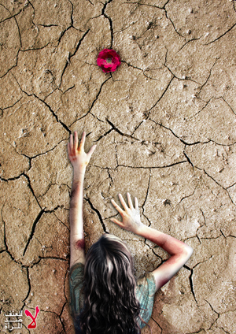

پذيرش > تریبون > مقالات > تصمیم منیژه: روایتی از بن بست چهل سوی زنانی که در روابط خشونت باقی می (...)


 تصمیم منیژه: روایتی از بن بست چهل سوی زنانی که در روابط خشونت باقی می مانند تصمیم منیژه: روایتی از بن بست چهل سوی زنانی که در روابط خشونت باقی می مانند
9 تیر 1390 - - نسخه قابل چاپ
بی تردید یکی از مسائلی که هم در حوزه ی عملی (همچون تاسیس خانه های امن ) و هم حوزه ی نظری توجه فمنیست ها را بسیار به خود مشغول کرده قضیه خشونت علیه زنان است. یکی از سوالهایی که توجه هر دو این گروه ها را به خودجلب کرده این است که چرا زنان در رابطه های خشن و ناسالم باقی می مانند و مردانی را که دوست ندارند یا مردانی که آنها را مورد خشونت فیزیکی و فشار روحی قرار می دهند را ترک نمی کنند. با تساهل شاید بتوان جواب هایی را که به این سوال داده شده است را به دو گروه کلی تقسیم کرد. گروه اول کسانی هستند که تلاش در فهمیدن دلیل باقی ماندن زنها در رابطه های خشن دارند. این گروه به پروسه ی نرمالیزه شدن خشونت (normalization of violence) می پردازند و تلاش در فهم چگونگی “عادی” شدن و “پذیرش”خشونت دارند. گروه دیگر تلاش می کنند بفهمند که چه وقت و چه چیزی سبب می شود که زنها رابطه های ناسالم و خشن را ترک کنند.
به عبارت دیگر در حالی که گروه نخست به پروسه ی درونی کردن و همراهی کردن و تطبیق زنان با روابط ناسالم می پردازند گروه دوم نکته ی ثقل توجه شان را به کنش گری زنان معطوف می دارند. بی تردید ترکیب و در نظر داشتن هر دو این عوامل برای فهم چه گونه گی کارکرد پروسه ی خشونت و سازش یا مقاومت علیه آن لازم است. در ضمن سازش، درونی کردن و یا مقاومت زنان را باید در بستر شرایط مختلف اجتماعی و متن فرهنگی و طبقاتی ویژه ی خودش فهمید و به بحث و گفتگو پرداخت.
در ایران بی تردید سلسله ی بی شماری از قوانین چون محدودیت حق طلاق، اشتغال. حضانت کودکان، سفر و انتخاب محل زندگی و...از عواملی هستند که زنان را در بن بست چهل سویی از مشکلات به هم پیوسته قرار می دهند و آنها را از ترک شرایط ناسالم باز می دارند. با وجود آگاهی به این موانع یکی از سوالهای پیاپی که بسیاری زنان که در چرخه ی روابط خانوادگی و عشقی ناسالم قرار دارند باید جوابگو باشند پرسش های زیراست :
"چرا کردی؟" چرا زودتر جدا نشدی؟" چرا بچه دار شدی؟"، چرا بچه ی دوم را آوردی؟"، چرا دوباره برگشتی ؟"
در یادداشت های زیر منیژه مشکانی با در میان گذاشتن تجربه ی شخصی اش سعی دارد به این سوال ها پاسخ دهد.

روزنه یک
پسر همسایه مان بود. ازش خوشم می آمد و هر روز خرید دفتر و کتاب و نان و ماست و سبزی را بهانه می کردم که از خانه بزنم بیرون و بتوانم لحظه یی هر چند کوتاه ببینمش. هفده هیجده سال بیشتر نداشتم. او هم همین طور. یکی دو سالی از من بزرگتر بود. دست و دلم با دیدنش می لرزید. تا حضورش را حس می کردم نگاهم را سریع به آسفالت های داغ خیابان می دوختم تا مشت دلم باز نشود.
خلاصه پس از یکی دو سالی نگاه های گریزان و ملتهب، و گاه گاهی یکی دو جمله ردوبدل کردن به خواستگاری ام آمد. خانواده هامان با اما و اگر، موافقت کردند. همه چیز اما با سرعت گذشت.
تا چشم به هم زدم در تدارک مراسم عقد بودیم. یکی دو روز قبل از مراسم عقد در خانه با مادرم و دیگر زن های جوان و پیر فامیل مشغول آماده کردن سفره عقد بودیم. مادرم در حالی که تور قندسابی را گلدوزی می کرد نگاهی به من کرد و گفت:«دخترم! منیژه! من مادرت هستم. اما از الان بهت می|گم اختلاف زندگیت را حتی به من که مادرت هستم هیچ وقت نگو. درد و شادی زندگیت فقط مال خودت و شوهرت هست. هیچ دوستی، خواهری، فامیلی نباید بداند. شوهرت حتی اگر تو را کتک هم زد به کسی نگو!»
با ناباوری و شرم به مادرم نگاه کردم، خودش هم یاد گرفته بود که دردهایش را به کسی نگوید. با وجود این حرف هایش در برابرم دور و انتزاعی جلوه می کرد. اما یک چیز را باید با تلخی می پذیرفتم. آغوش مادر دیگر قرار نبود پناهگاهی برای گریه هایم، زمین افتادن هایم و درد هایم باشد. آیا این بزرگ شدن بود؟
درد بزرگ شدن همه وجودم را می گیرد.
روزنه دو
یکی دو روز قبل از مراسم عقد، خواهرم از هند زنگ می زند. باز تلاش دارد که نصیحت کند که ازدواج را عقب بیاندازم. می گوید:«خب یک مدت نامزد باشین. بیشتر همدیگر را بشناسین. بگذار دانشگاهت تموم بشه بعد ازدواج کن.» به او می گویم: «تو انگار شرایط اینجا یادت رفته. خودت آنجا هر کاری می خواهی می کنی؛ نمی دانی اینجا حرف زدن و بیرون رفتن با یه پسر چه هزینه هایی داره!»
خواهرم می گوید:«انگار الان میشه حق طلاق، اجازه اشتغال، تحصیل و...را در عقدنامه ذکر کرد. لااقل این شروط را درعقدنامه ات قید کن.» می گویم: «مگه میشه اول ازدواج و وصلت از شرط و شروط طلاق حرف زد. خودش و خانوادش فکر می کنن اهل زندگی نیستم و از اول زندگی به فکر طلاق هستم...» خواهرم چیزهایی درباره ی حقوق برابر می گفت و من، از نیت خوب اول زندگی و عشق حرف می|زدم.»
و مادرم سفره ی عقد را نشانم می داد و می پرسید:«قشنگ شده مگه نه؟»
روزنه ی سوم
یک سال از زندگی مشترکمان می گذرد. خانه|ی ما اجاره|ای است. پسر همسایه ی سابق و شوهر کنونی من صبح ها پیش پدرش کار می کند و بعد از ظهرها... احساس استقلال نمی کنم. برای هر خرجی باید به مادر و پدر شوهر حساب پس بدهم. احساس می کنم اداره ی زندگی ام بیش از این که دست من و شوهرم باشد دست خانواده او است. دلم می خواهد با یکی مشورت کنم که چه طور می شود شوهرم را به اشتغال در جای دیگری تشویق کنم. از چه کسی کمک بخواهم که به جای پاسخ نپرسد:«مگر از اول نمی دانستی که پیش پدرش کار می کند؟ مگر از اول خانواده اش را نمی شناختی؟ خودت خواستی! خودت کردی و....»
گذشته از همه احساس می کردم طبق یک سلسله قواعد نانوشته به عنوان یک "زن قابل" از من انتظار می رود از پس ناممکن ها بر بیایم. بدون ذره ای حق دخالت و تصمیم گیری نه تنها باید سر و ته زندگی را به هم می رساندم بلکه مسول تمامی اشتباه های همسرم نیز بودم.
موضوع حق نشده موضوع مجازات شده بودم.
روزنه چهار
وقتی که برای اولین بار تریاک در جیبش پیدا کردم آنقدر هول شده بودم که نمی دانستم چکار کنم. کجا پنهانش کنم؟ چندبار جایش را عوض کردم. دستهایم چنان می لرزید که نمی توانستم کاری کنم، حتی چندین بار از دستم افتاد. قلبم آمده بود توی حلقم و چنان می زد که می ترسیدم با صدای تپیدنش بیدار شود. رفتم توالت و در را روی خودم بستم. انگار دیوارهای توالت به هم نزدیکتر و نزدیکتر می شدند تا مرا در گهی که در آن گیر کرده بودم زنده به گور کنند. باز صدای بقیه در گوشم تکرار می شود:«خودت خواستی! خودت کردی! خودت خواستی! خودت کردی!»
مدت ها بین ما جرو بحث و دعوا بود. بالاخره با دارو و دکتر، باکمک های من و کنترل های مشترک من و خانواده اش تریاک را، مثلا، کنار گذاشت. گرچه پس از مدت کوتاهی باز همان آش وهمان کاسه. بارها و بارها در جیبش یا در وسایلش تریاک یا چیزهای مشکوک بدتر پیدا کردم. و هر بار بهانه و درگیری و دروغ که مال او نیست و دشمن در جیبش گذاشته. حالا دوستانی هم پیدا کرده بود که همه چیز را به دشمن ربط می دادند... او هم حالا همه چیز را به دشمن ربط می داد.
دیگر کارهم نمی کرد. و حالت های شک و توهم و سوظن هم در او پیدا شد. فهمیدم دیگر فقط مشکل تریاک نیست. خرج زندگی را پدرش و گاهی دوستان پر نفوذش می دادند...و من نمی دانستم چه کنم...وضعیت این قدر خراب بود که دیگر حتی دیگر لازم نبود که با کسی حرف بزنم. هر کس که چشم و دل بینا داشت می توانست ببیند...اما انگار قرار بود نبینند...، نه خانواده ی او و نه خانواده ی من، انگار یک قرار دسته جمعی بود که هیچ کس نباید به روی خودش بیاورد تا من بسازم، انگار قرار بود همه بگویند دارد زندگیش را می کند دیگر ...
روزنه ی پنج
سالها پشت سر هم و به سرعت می گذرند. تشنج و تهدید مداوم فضای خانه اجاره ای مان را که مدام عوض می شود را هر روز بیشتر از روز پیش غیر قابل تحمل می کند. بچه ی اولمان هفت ساله شده و از پدر جز یک سایه ی تهدید آمیز چیزی نفهمیده و ندیده. رفت و آمد و معاشرت شوهرم با کسانی که سر و ته شان به جاهای مختلف وصل است نگرانی بزرگی مزید بر نگرانی های دیگر شده است. و حالا او مدام اصرار دارد که باز بچه دار بشویم. از او اصرار و از من سرپیچی. بالاخره به کامش می رسد. می گوید:« اگر بچه|ی دوم بیاید همه چیز بهتر می شود...» دور و بری ها هم مدام می گویند بچه ات تنهاست...بچه ی دوم به زندگی ثبات می دهد...» بالاخره بر خلاف میلم حامله می شوم. چهار ماهه که حامله بودم در اثر مشاجره ایی پر خشونت بچه ام را از دست می دهم... بعد از شش ماه دوباره باید حامله شوم، حامله می شوم تا به او ثابت کنم که اهل زندگی هستم .»
مادرم و همه می بینند که روز به روز لاغرتر و افسرده تر می شوم...اما هیچ وقت هیچ سوالی از من نمی کنند. هر وقت به خاطر دردهای زیادم احتیاج به کمک دارم مادرم به من کمک می کند اما هیچ وقت نمی پرسد:«چرا لاغر شده ای، چرا خودت و بچه هایت عصبی هستید...» هیچ وقت هم سوالی در مورد کبودی های بدنم نمی کند. مادرم به من یاد داده که بسوزم و بسازم و دردهای زندگی را برای خودم نگه دارم.
من فرزند خلف مادرم هستم.....
روزنه ی شش
روابط عجیب و غریب او سوظن های روزافزون او عرصه را بر من تنگ کرده است. خشونت او حالا دیگر دامن گیر بچه ها هم شده است.
دیگر نه تنها شبها از فرط نگرانی که بلایی سر من در خواب بیاورد نمی توانم بخوابم روزها هم جرات نمی کنم بچه ها را حتی برای مدت کوتاهی با او در خانه تنها بگذارم. فرزند بزرگترم روز به روز حالش بدتر می شود. نمی دانم به کجا باید پناه ببریم. در مدت کمتر از دو سال میشه تا خانه ی اجاره ای عوض کردیم. هرسه ی صاحبخانه ها از سر و صدای خشونت آمیز او گله داشتند. اما یکبار که داشت بچه ها را کتک می زد و من به پلیس زنگ زدم هیچ کدام حاضر نشدند حرفی به پلیس بزنند. پلیس هم بدون رسیدگی و حتی نوشتن یک گزارش سرش را پایین انداخت و رفت.
روزنه ی هفت
برای تولد بچه هایم خواهرم به همراه دوستی برایشان کادو از آن سوی آبها فرستاده است. دوست خواهرم زن جوان مهربانی است. از من می پرسد که آیا کار می کنم یا نه و من مثل همیشه می گویم :«تحصیلات دانشگاهی دارم اما شوهرم علاقه ندارد که کار کنم.» جوابی که سالهاست به همه می دهم بدون این که به آن فکر کنم. دوست خواهرم کتابچه ی کوچکی را به من نشان می دهد و آرام شروع به توضیح و ورق زدن می کند...پس از سالها یاد گفتگوی تلفنی خواهرم و خودم قبل از ازدواجم می افتم؛ حق طلاق، حضانت و سرپرستی، تمکین، اشتغال و... من که می گفتم نمی شود در آستانه ی ازدواج از شرایط طلاق حرف زد. ولی انگار این دفترچه الان امیدی است...صدایی است در برابر مادری که می گوید و می گفت صبور باش! درد زندگیت را به من هم که مادرت هستم نگو...درد زندگی مال خودت است...، او از کارگاه های حقوق زن می گوید، از تجربه حرف زدن و نوشتن و شکستن سکوت...، از قانون تبعیض آمیز و ضرورت اقدام جمعی برای تغییر آن ...
دفترچه را می گیرم و در کیفم می گذارم احساس می کنم دردم را بدون این که به کسی بگویم یکی شنیده است... دردهای زندگی ام هم می تواند فقط مال خودم نباشد...
روزنه هشت
بلاخره و کم کم با همه ی مخالفتها و حمایت های کم اما مهم و دل گرم کننده جرات می|کنم اقدام به طلاق کنم... بعد مبارزه دیگری آغاز می شود. تازه می فهمم چه بن بست چهل سویی از قوانین، عرف و مصلحت و نامصلحت های اجتماعی اطرافم را فرا گرفته...اينجا بهترين راه در چنين شرايطي طلاق توافقي است كه شوهرم به آن راضي نخواهد شد. پروسه طلاق بسيار زمانبر و فرسايشگر است...این را همه ی وکیل هایی که با آنها تماس گرفته ام هم می گویند.
خانه ی مادرم زندگی می کنم. مادرم هم با يك حوصله هفتاد ساله، شرايط موجود را چندان نمي پذيرد. البته او هم حق دارد و در حال حاضر چاره اي جز مدارا نيست. شوهرم به بهانه ی محکمه پسند عدم تمکین مخارج من را که هیچ، خرجی بچه هایش را که مایملک او محسوب می شوند را نمی دهد. اجازه ی کار نمی دهد. مدت کوتاهی پیش یکی از اقوام کار می کردم. شوهرم آمد و رسوایی به پا کرد و به صاحب کار گفت که می رود از دست او شکایت می کند. صاحب کار عذرم را خواست.
از بلاتكليفي خسته ام. در خانه ی مادرم خلوت و سكوت و آرامشی را كه نياز دارم موجود نیست. رفت و آمد هست. هر كس به فراخور فكر و احساسش براي زندگي من و بچه هایم نسخه اي مي پيچد. حسابي كلافه ام ...
یک بار وقتی با اصرار من به آزمایشگاه رفتیم که آزمایش اعتیاد بدهد مقابل آزمايشگاه من را به باد كتك زدن گرفت. هيچ كدام از آدمهايي كه شاهد ماجرا بودند جرات نكردند خود را در يك مساله خانوادگي دخالت دهند.اگر هم كسي پا پيش مي گذاشت ،شوهرم به راحتي مي توانست بگويد" او همسر من است و كسي حق دخالت ندارد!". حتي منشي آزمايشگاه ،با هراس از ما خواست از جلوي آزمايشگاه دور شویم و براي مدير آزمايشگاه دردسر درست نكنیم . در چنين شرايطي به پليس هم اصلا نمي توان اميدوار بود.دعواي خانوادگي ربطي به پليس ندارد.
چندی پیش به دكترشوهرم مراجعه کردم. دكترگفت او در حال درمان هست و حالش بهتر شده است. من به دكتر گفتم به نظر شما ادامه زندگي با شوهرم با سوابقی که دارد برای من و بچه ها خطرناک نیست و بچه ها رو دچار مخاطرات فیزیکی و روحي نمي كند؟ دكتر هم با تحكم گفت :«به نظر شما مديريت زندگي دو تا بچه بدون پدر، در اين وضعيت موجود، شما و بچه ها را دچار مخاطره نمي كند !؟»
چند روز پیش دادگاه داشتیم. قاضي از من مي پرسد :«چرا از شوهرت تمكين نمي كني. مي گويم حاج آقا او به خاطر مصرف مواد مخدر به من سوءظن شديد دارد و در توهماتش خيال مي كند كه من به او خيانت مي كنم.» حاج آقا مي گويد:« دليلش اين است كه از هم دوريد. به خانه ات برگردي خوب مي شود. مي گويم حاج آقا! سركار نمي رود ... مرا تامين مالي و عاطفي نمي كند...به من اعتماد ندارد ... بچه ها را می زند من خسته شده ام و ديگر نمي توانم ادامه دهم.....حاج آقا ميگويد:«ببرش برايش از دعا نويس دعايي بگير ....می پرم وسط حرف حاج آقا كه :خودش ميره حاج آقا! يك بار 800 هزار تومان داده به دعا نويس. سر همين قضيه هم باهاش مشكل دارم. حاج آقا مدبرانه مي گويد: «تنها رفته نتيجه نگرفته. با هم برويد. درست مي شود.»
...
هرچند همچنان بازهم در گوشم تکرار می شود: خودت کردی! خودت خواستی!...اما حالا که می خواهم عوض اش کنم چرا صدایی به حمایت نمی آید؟ دادگاه، قانون، پلیس ، پزشک، هیچ کدام از اینها چرا جوابگوی "خودی" نیست که قصد تغییر دارد؟
ارسال به
بالاترین
،
توییتر
،
فریندفید
،
فیسبوک
در همين بخش :
 دهمین دورۀ مراسم تندیس صدیقه دولت آبادی ۱۳۹۲ دهمین دورۀ مراسم تندیس صدیقه دولت آبادی ۱۳۹۲
کارت پستالهایی به بهانهی هشت مارس و به یاد همهی مبارزین راه برابری
بیانیه بیش از 350 تن از مدافعان حقوق زنان به مناسبت روز جهانی زن؛ زنان هر روز فرودستتر میشوند
لباسی که برای تن ما دوخته اند! /اعظم بهرامی
چالشها و چشمانداز فعالیت مدنی زنان
ديگر بخش ها :
طرح یک میلیون امضا
|
مقالات
|
سایت نوشته ها
|
اخبار
|
گزارش كمپين
|
گفت و گو
|
علیه سکوت
|
كوچه به كوچه
|
نامه های شما
|
گزارش ویژه
|
گفتگو با اعضا
|
ویژه سالگرد کمپین
|
تصویر برابری
|
دل آرام علی
|
تریبون
|
مقالات
|
تاریخ شفاهی
|
خارج از چارچوب
|
کتابخانه
|
درباره کمپین
|
کمپین در شهرها
|
کمپین در بند
|
صدای تغییر
|
ویژه 22 خرداد
|
لایحه حمایت از خانواده
|
گالری
|
عشا مومنی
|
امیر یعقوبعلی
|
خدیجه مقدم
|
راحله عسگری زاده و نسیم خسروی
|
پروین اردلان،جلوه جواهری، مریم حسین خواه، ناهید کشاورز
|
زینب پیغمبرزاده
|
سعیده امین، سارا ایمانیان، محبوبه حسین زاده، ناهید کشاورز و همایون نامی
|
احترام شادفر
|
نسیم سرابندی زاده،فاطمه دهدشتی
|
وبلاگ مهمان
|
پرونده خرم آباد
|
دستگیری ها
|
مریم مالک
|
پرستو اللهیاری
|
مهرنوش اعتمادی
|
سمیه رشیدی
|
Other Languages
|
همراهان
|
«فراخوان کمپین ده روز با بهاره هدایت»
| English
|